Wednesday
*Ничего так, тепло.*
Где-то в тёмном-тёмном лесу, среди высоких старых деревьев, притаившись в кустах выжидают свою жертву хищники. И даже несмотря на то, что они могут быть не такими страшными, как товарищ из фильма, тем не менее могут принести немало проблем. Мало кто воспринимает интернет как “страшный и таинственный лес”, но тем не менее в какой-то степени так и есть. И хищники там тоже есть, и поверьте мне, они не такие милые как пушистое создание на картинке.
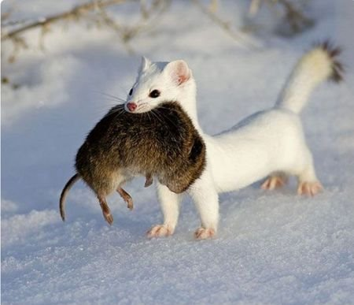
Среда: VBox Version 5.2.12 r122591 (Qt5.6.2), Win7x64 SP1
Инструменты: ProcMon v 3.4, Process Explorer v16.21, песочница, мозг , глаза
SHA-1: 0ff773a55381634d7e56fc919b792545328e8a73 (VirusTotal)
10:14. Приятный горячий кофе развеял остатки сонливости и под немного надоедающий шум кондиционера открываю я свой полигон. А там ничего, все как обычно. Тихо и спокойно. Как будто даже слишком… Что же это? Не знаю, но чует мое аналитическое сердце что-то очень интересное! А может и нет.
Прежде чем пускать программу играться в песочнице, неплохо было бы посмотреть на нее в общем при помощи обычного hex-редактора и то, что привлекло мое внимание уже навело на мысли:
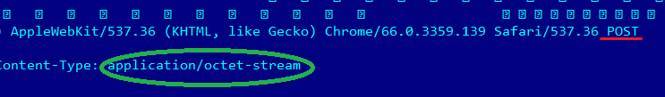
Очевидно у этого зверька есть планы что-то кому-то отправлять методом POST(можно почитать тут). Если кратко, то это способ отправки данных, один из. Строка “application/octet-stream” - тоже относится к HTTP запросу (можно почитать там же). А метод этот частенько используют, чтобы отправить то, что обычный человек отправлять и не подумает. Например, свои пароли. Ну допустим, действует презумпция невиновности (программа не виновата пока не доказано обратное), поэтому дам ей возможность оправдать себя. Надо посмотреть, что за строки еще есть.
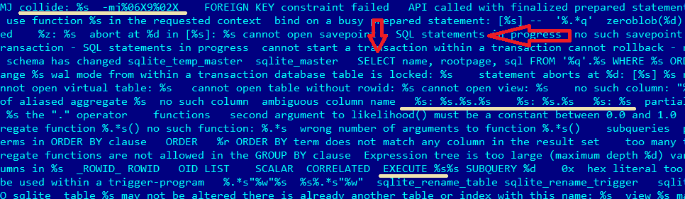
Чем дальше, тем страшнее, на самом деле …
Отчет песочницы прям кричит: *“Осторожно Опасно! Какая-то вредная фигня!”.*Охотно верю, куку, охотно верю. Мне самой не нравится это все. Копирую “подозреваемого” на свою ВМ, запускаю Process Monitor и Process Explorer , переименовываю как-нибудь оригинально файл (например, malware.exe, почему нет?) и запускаю… Поехали!
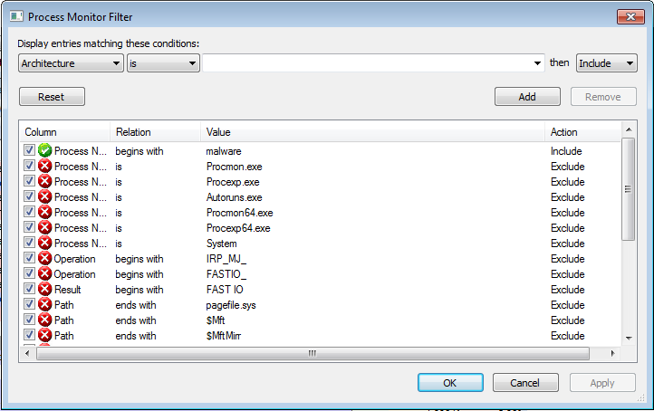
На картинке показан фильтр из Process Monitor, чтобы можно было наблюдать лишь за интересующим файлом. Более подробно про то, как пользоваться этой утилитой, можно почитать тут. В данном случае, отфильтровала по имени процесса (Process Name).
Через какое-то непродолжительное время файл исчезает из Process Explorer. При этом, нет никаких окон, ничего. Это уже само по себе довольно неприятно пахнет. Но ничего, Process Monitor все это время работал и писал . Посмотрим, что он там записал… Очень показательным будет фильтр на запись, вот его и посмотрю в первую очередь:
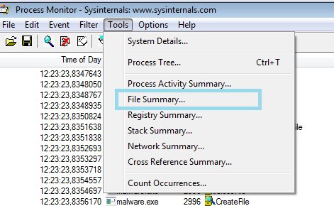
Кликнув на “File Summary” (голубой квадратик ) я вижу все операции над файлами. Так как главный фильтр стоит на название процесса “malware.exe”, то я увижу все операции над файлами, сделанные этой программой.
Открывается окошечко и вот что видно:
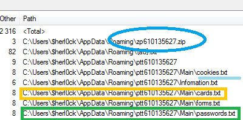
Вопросов больше нет, ваша честь ! Подсудимый пойман с поличным! Давайте посмотрим его карманы!
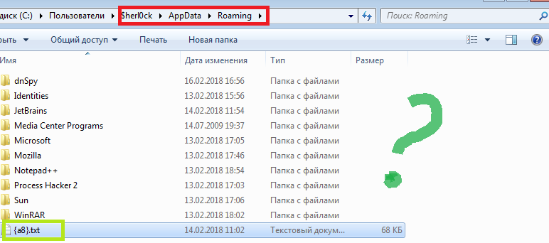
А где??? Где архив, где документы? Остался лишь какой-то непонятный файл {a8}.txt. Грусть-тоска… Мы вот-вот можем проиграть дело!
Открою файл {a8}.txt, так уж и быть…
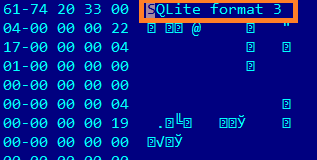
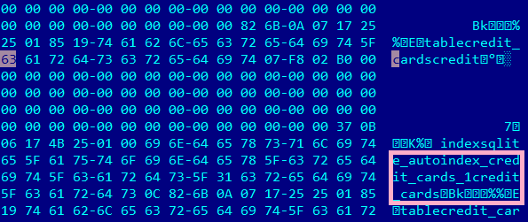
SQL запрос, который нужен был, чтобы добыть информацию. То есть, найдено орудие преступления ! Замечательно, конечно, но дело все равно у нас уже в кармане, тут в общем уже никуда не деться: надежный свидетель видел файлы. Но все же, куда они делись? Удалились, конечно же, куда ж еще. Так что надо просто успеть скопировать все, пока вирус за собой не почистит.
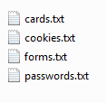
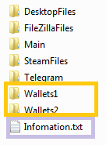
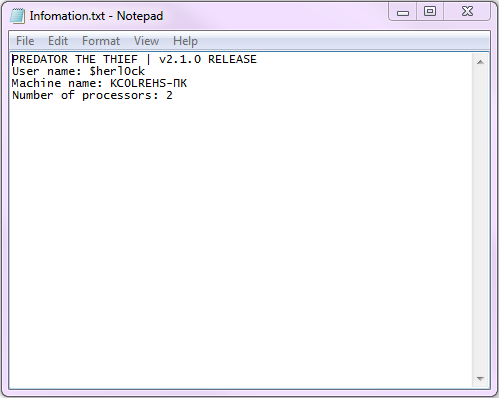
Готово! Подсудимый сознался! PREDATOR THE THIEF v2.1.0. (То есть, этой каки больше одного релиза было… )
Скриншоты говорят сами за себя. Подсудимого хищника (англ. predator) велено отправить за решетку ! Ну вот, день прошел не зря, задержан и осужден еще один вредитель!